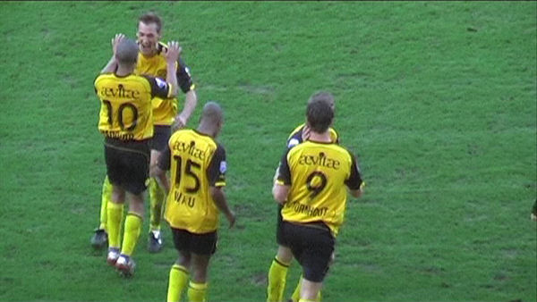

Twee autootjes meer dan verleden jaar.
Het ene grote doek op oost het andere op zuid.
Een kleine duizend Ajaxsupporters in het gastenvak en nog eens duizend
verspreid door het stadion.
Deze neus is Z16 ontvlucht omdat de mensen aldaar niet wilden "sjitten". Tot
nooit meer gast!
Na een tijdje schaakvoetballlen is het Lamah die de bal achter Stekelenburg
weet te schieten:
1-0, (22').
Spelers van vreugde achter de boarding.
Het stille gastenvak, met daarnaast de goal in herhaling op grootformaat.
Bakircioglu schiet de bal tegen Saeijs' onderarm. Het massale Ajax-appèl
voor hands gaat niet door.
Het gemekker leidt zelfs tot gele kaarten voor Bakircioglu en voor Perez.

De bal wordt over Castro binnengekopt echter het doelpunt telt niet omdat
Heitinga de keeper omver
heeft getrokken.
Huntelaar controleert een aangespeelde bal van Perez en scoort met een
stuiterbal: 1-1, (38').
Een vrije trap van Silva draait mooi de goal in, maar....
... Castro wordt zwaar gehinderd door Huntelaar.
En zo wordt er voor de tweede keer te vroeg gejuicht in het Ajax-vak.
Invaller Rommedahl alleen op de keeper af, schiet ver naast.
Suarez krijgt de les gelezen van Castro nadat de aanvaller te hard inkwam op
de doelman.
Schot van Matondo gaat naast.
Castro behoedt Roda voor een achterstand door een schot van Huntelaar te
keren.
Invaller Van Tornhout herovert de bal en passed mooi op de kop van Hadouir.

Hadouir kopt binnen 2-1, (79').
Senden krijgt voor het eerst in tijden ook nog wat speeltijd. op de
achtergrond Ajax-trainer Koster.
Aan de vier minuten extra speeltijd lijkt maar geen einde te komen. Maar
hier is dan eindelijk de eerste
overwinning van 2008 binnen.
Party-time!

Bedankjes aan alle tribunes.
Bodor in de Kickoff. Verder waren ook Cissé en Meeuwis aanwezig.
Foto's vanuit Ajax-perspectief
>>>